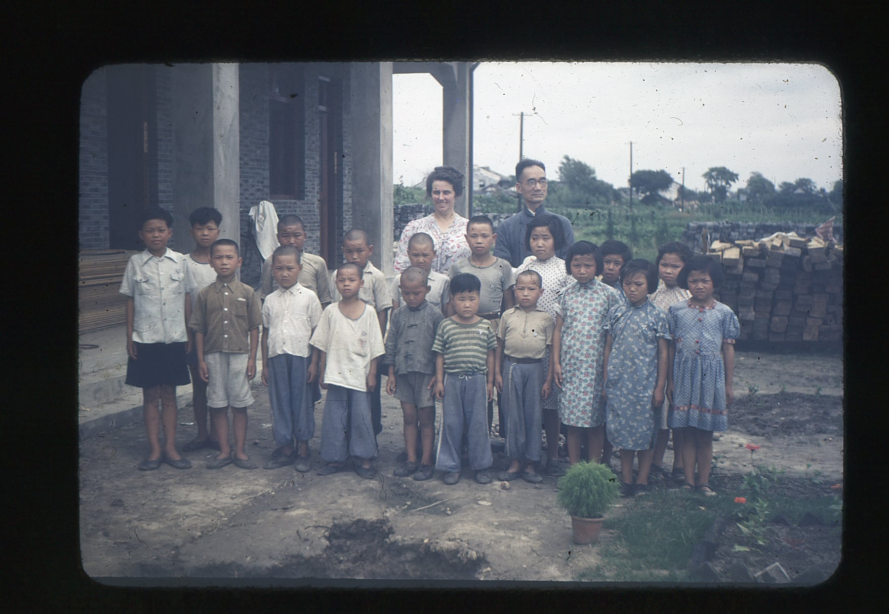
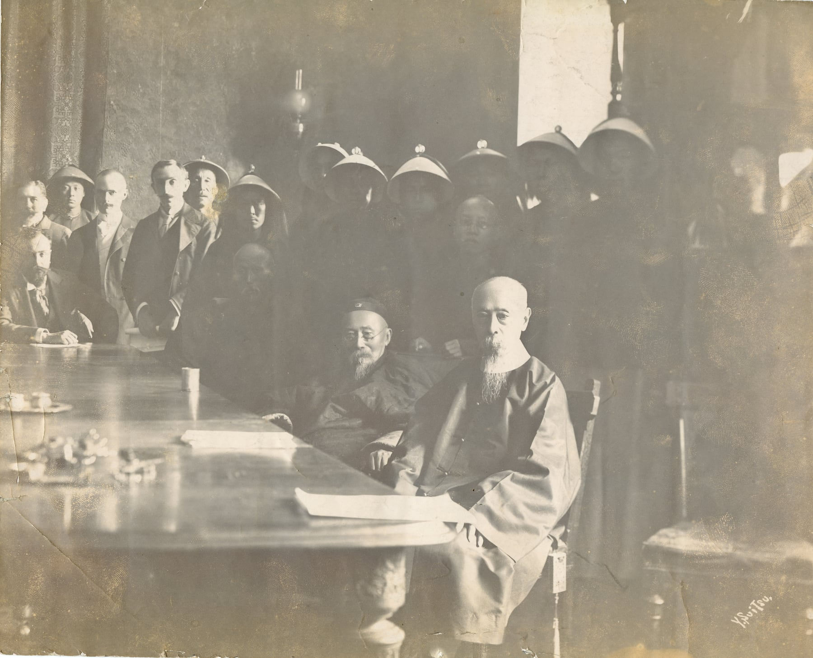
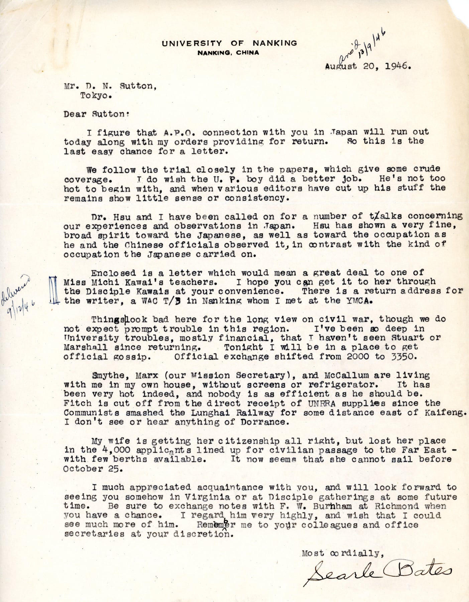
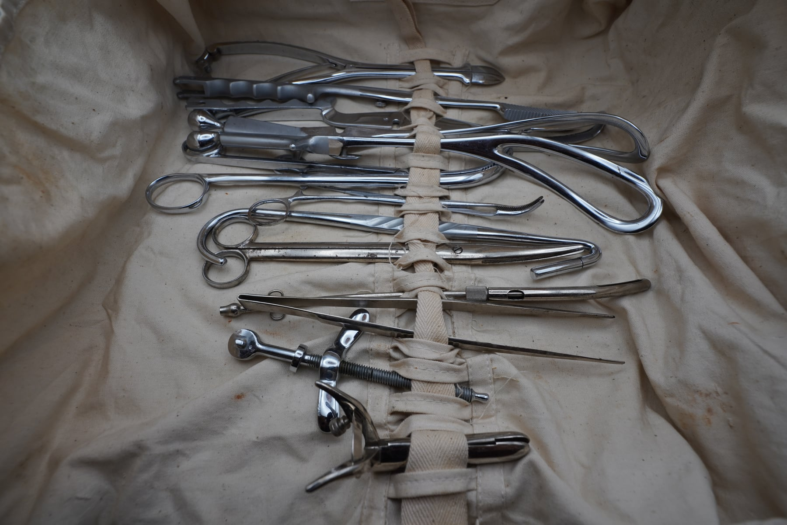
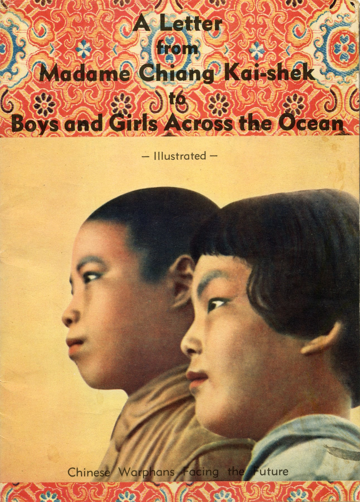
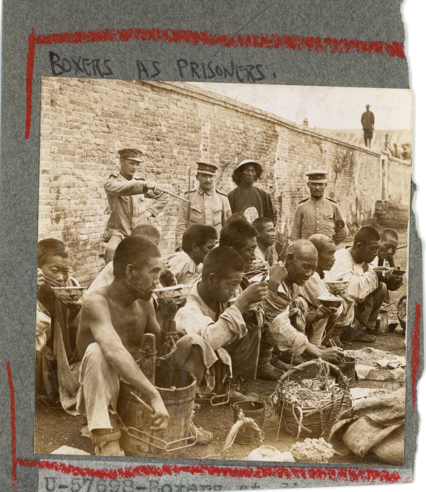
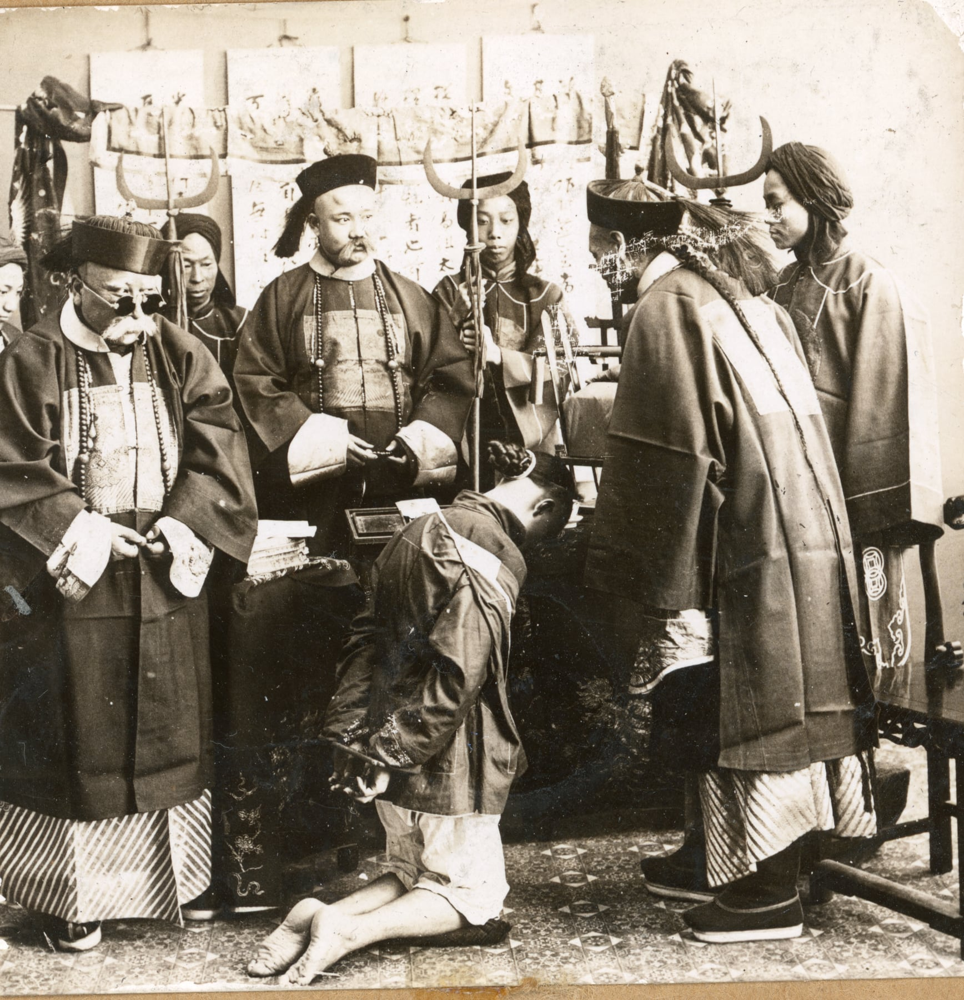

01
孤儿、儿童与战时救援
儿童与孤儿的照片、救援读物和跨洋募捐资料，记录战争中孩子们的处境，以及人们如何向他们伸出援手。
馆藏精选
原版照片、档案、书籍、期刊、海报、地图、未刊手稿和实物。MOFER 正逐步整理这些藏品，建立可供研究、引用和教学使用的数字馆藏。

从原件了解一个时代，也了解其中的人。
这 8 件代表性藏品是了解馆藏的起点。它们的记录未来可扩展为可检索的数字目录。
正在整理的藏品，还有更多故事。
这些资料仍在整理中，可用于未来的专题、线上展示和教育项目。

儿童与孤儿的照片、救援读物和跨洋募捐资料，记录战争中孩子们的处境，以及人们如何向他们伸出援手。

有关东京审判、南京大学和战后调查的通信，为研究司法、记忆与证据提供线索。

医疗器械、医护文本和救援资料，记录战场之外的救治、运输与后方支援。

面向海外儿童的宣传与教育读物，记录远东战争如何进入北美课堂和家庭阅读。

十九世纪末至二十世纪初的照片，记录战争、条约与跨国摄影中的晚清中国。

人物照片、题跋和原有装裱，留下了身份、社会阶层与视觉文化的线索。